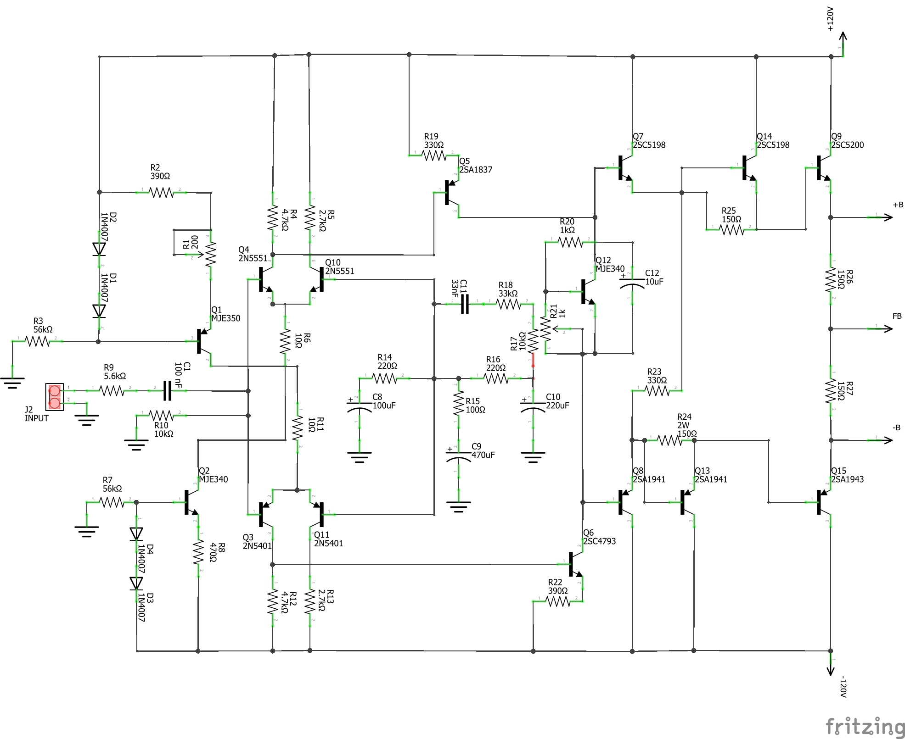
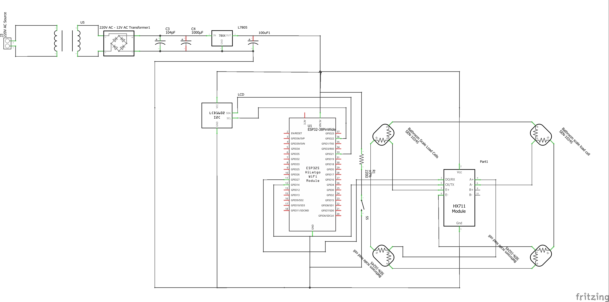
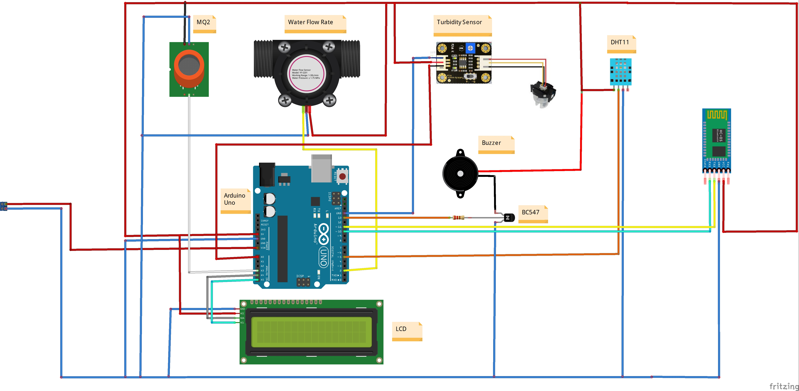
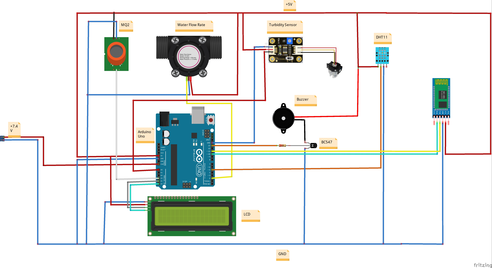
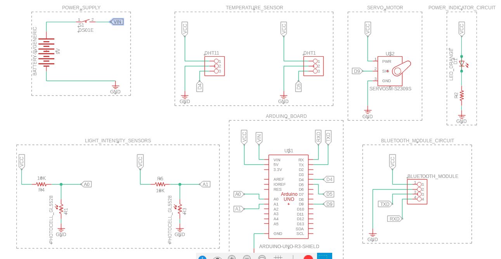
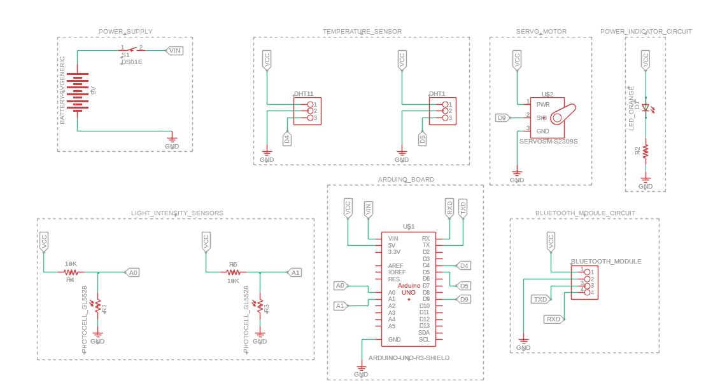
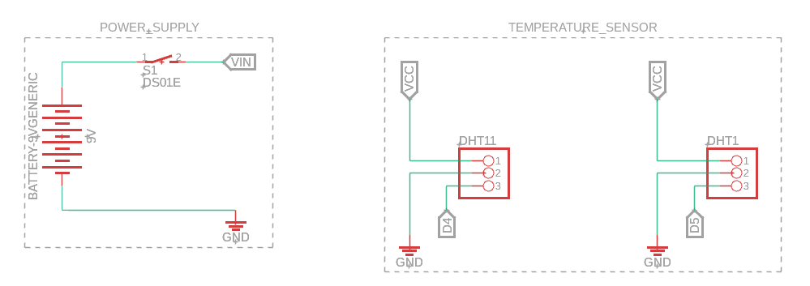
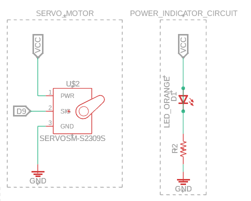

DRV8332 SMD-to-THD Adapter Circuit
A video walkthrough of an adapter circuit built around the DRV8332, showing practical board-level work for motor-drive and power-electronics integration.
Electronics Design Portfolio
A dedicated gallery of electronics work spanning schematics, PCB concepts, breadboard layouts, 3D circuit views, and supporting design documents. This page keeps the main portfolio focused while still surfacing the depth of my hardware design practice.
Featured Builds
These picks give a quick visual read on the range of my work, from motor-drive support circuits to posture-device layouts and analog/audio board design.
A video walkthrough of an adapter circuit built around the DRV8332, showing practical board-level work for motor-drive and power-electronics integration.


3D hardware previews from the posture-correction system, useful for showing component placement, enclosure-aware thinking, and the product-design side of electronics work.

A dedicated audio circuit schematic that adds analog-board design evidence to the portfolio and broadens the hardware story beyond embedded digital systems.

A compact circuit package with schematic and breadboard references that helps show early-stage concept development, prototyping flow, and design communication.
Circuit Gallery
Every card below captures a distinct design set from the `psc` archive. Where image previews exist, they are surfaced directly; where the material is document-heavy, the bundle is presented as clean downloadable references.

A schematic capture from an inventory-oriented electronics concept, included here as part of my broader hardware system design work.


Breadboard and physical-layout imagery from a monitoring-oriented build, useful for demonstrating how designs move from diagram to practical assembly.
A paired document set for climate-monitoring hardware, covering both a 2D layout perspective and the schematic view.
Design documentation for a soil-quality monitoring circuit, showing another application area in sensing and instrumentation.
A schematic and breadboard document bundle from the first Taiwo design iteration, preserved here as part of my archive of client-facing or named builds.
A second version of the Taiwo design package, showing refinement across schematic and board-level documentation.
A document trail containing the schematic plus two versions of a 2D layout export, useful for showing iterative refinement and documentation discipline.
A named board-layout PDF preserved in the archive as part of my wider collection of practical circuit-design outputs.
A standalone schematic document from another electronics design stream, kept here as part of the full archive.



